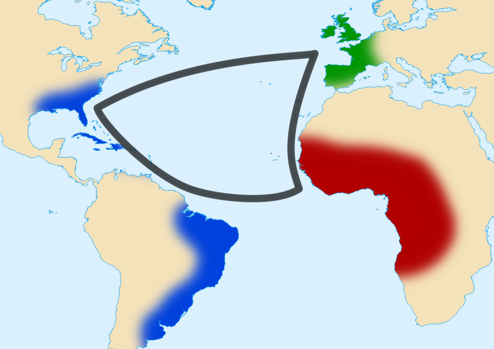

Mapas temáticos, vídeos, gráficos comparativos e a lista de referências que sustentam cada análise deste site. Aqui mostramos as evidências por trás de tudo o que foi afirmado.
Um bom trabalho mostra de onde vêm suas informações. Esta página reúne os recursos visuais que ajudam a entender os dados e a lista de fontes que garante a credibilidade do projeto. Substitua os espaços indicados pelos mapas, vídeos e gráficos que o grupo produzir ou selecionar.
Materiais que tornam a análise mais clara e concreta.
Fronteiras coloniais, distribuição de recursos minerais e densidade populacional. Insira aqui imagens de mapas ou um mapa interativo incorporado.
Documentários curtos sobre história, cultura e atualidades. Incorpore vídeos do YouTube usando o código de inserção.
Fotografias que ilustram paisagens, povos e acontecimentos dos dois continentes, sempre com crédito do autor.
Uma diáspora africana global: como povos de origem africana se espalharam pelo mundo e mantiveram laços culturais vivos. (Clique para abrir no YouTube.)
O chef Stephen Satterfield mostra como a comida africana virou comida americana — uma prova viva da diáspora. (Disponível na Netflix; clique para abrir.)

Exemplo de gráfico ilustrativo. Substitua pelos dados reais que o grupo pesquisar e cite a fonte.
Valores em bilhões de habitantes · dado de exemplo
Quantidade de Estados soberanos · dado de exemplo
Importante: os números acima são apenas exemplos visuais. Antes de publicar, troque por dados verificados e indique a fonte (ano e instituição).
Tudo o que foi consultado para construir este site.